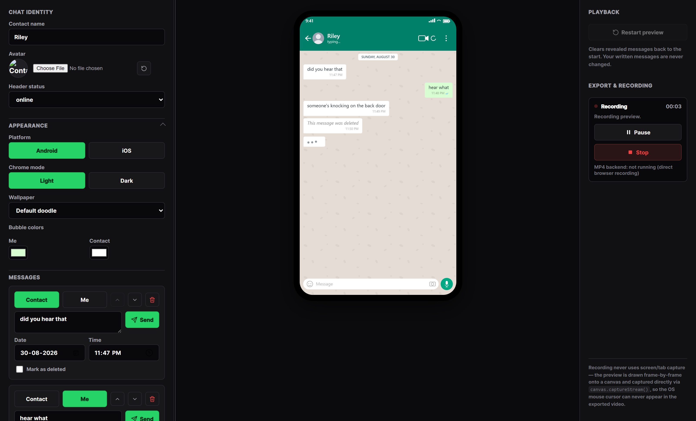

WhatsApp Chat Generator
Turn scripted chats into polished vertical videos.
Create realistic chat conversations, preview every message, and record clean 9:16 videos without screen capture or a visible mouse cursor.
No screen recording required
Riley
typing…
The actual interface
Every control here drives the preview — nothing is faked for the video.
The sidebar edits the conversation, the phone shows exactly what will be recorded, and the export panel captures it. This is a real screenshot of the app, not a mockup.

Editable message sidebar
Live Android / iOS preview
Recording state, right there
What’s actually in the app
Built for getting the shot right, not for a feature checklist.
Real Android & iOS previews
A platform toggle changes the status bar, header, bubble shape, and font — not just a label.
Full appearance control
Contact name, avatar, status, wallpaper, and bubble colors for both sides — all editable, nothing templated.
Message-by-message pacing
Nothing auto-plays. You send each message when you want it to appear, typing indicator included.
Cursor-free canvas recording
The preview is captured straight from a canvas element, so your OS mouse pointer can’t appear in the export.
1080 × 1920 output, pause & resume
Record vertical video at a fixed resolution, pausing and resuming without starting a new file.
Automatic MP4 conversion
When the optional local backend is running, recordings are re-encoded to standard H.264 MP4 automatically.
3 steps
How it works
-
01
Build the conversation
Add messages, set the sender, timestamp, and delivery ticks for each line.
-
02
Preview the story
Step through with Send — each message, and its typing indicator, appears exactly when you trigger it.
-
03
Record and export
Start the recorder, pause and resume as needed, and export a clean 1080 × 1920 file.
Made for
Built for scripted, short-form storytelling.
Anywhere a conversation tells the story better than a narrator reading it aloud.
-
Short-form storytelling
Horror, mystery, and drama told as a chat.
-
Fictional chat videos
Original scripted conversations, start to finish.
-
Social media content
Vertical clips built for TikTok, Shorts, and Reels.
-
Conversation demonstrations
Walk through a script, pitch, or storyboard as a chat.
How recording works
Recorded from the canvas, not your screen.
The phone preview is drawn frame-by-frame onto a canvas element, which is captured directly
with canvas.captureStream().
Your screen or browser tab is never captured.
- No operating-system cursor in the exported recording
- Consistent 1080 × 1920 vertical resolution, every time
- Only the phone preview is captured — studio controls stay out of frame
Screen capture
- Mouse cursor visible in the video
- Resolution depends on your window size
- Studio controls can end up in the frame
Canvas capture (this app)
- Cursor cannot appear — it’s not part of the canvas
- Fixed 1080 × 1920 output, always
- Only the phone preview is ever drawn to the canvas
About this tool
What Is a WhatsApp Chat Generator?
A WhatsApp chat generator is a tool that lets you build a realistic-looking chat conversation, without ever sending a real message, so you can turn a script into a video. Chat Story Recorder is exactly that: a browser-based WhatsApp chat generator built for creators who write scripted conversations for short-form video and need a clean way to record them. Instead of screenshotting a real chat app or piecing frames together in a video editor, you type each message into the sidebar, choose who it is from, set the time and delivery ticks, and watch it appear in a live, accurate phone preview. When the conversation looks right, you press record and export a finished vertical video, all in one tool, all in the browser, for free, with no signup and no watermark.
A Fake Chat Generator Built for Realism
Most fake chat generator websites stop at a single static image, one screenshot-style export that you then have to animate yourself. This one is different. Every message is revealed on your own schedule, one Send click at a time, so the pacing — a pause before a reply, a typing indicator that lingers, a message that gets deleted mid-conversation — is entirely yours to control. The chat itself is fully customizable: contact name, avatar, online or “last seen” status, wallpaper, and bubble colors for both sides of the conversation. Wallpapers can be the default doodle pattern, a custom image, a solid color, or a gradient, so no two videos have to look the same. A platform toggle switches between genuinely different Android and iOS conventions — status bar, header, bubble shape, and font all change together, not just a color swap — so the output matches whichever platform your story is supposed to be happening on.
From Chat Generator to Finished Video
What sets this chat generator apart is that it does not stop at the chat. Once your conversation is built and previewed, the same tool records it directly as a video, a fixed 1080 × 1920 vertical file, ready for TikTok, Shorts, or Reels. Recording is captured straight from a canvas element rather than your screen or browser tab, so the operating system’s mouse cursor can never end up in the footage, and only the phone preview itself is ever part of the frame. You can pause and resume a recording without starting a new file, watch the recording state and timer update live, and if the optional local MP4 backend is running, your export is automatically re-encoded to standard H.264 MP4 so it opens cleanly in any editor. If the backend is not running, you still get a valid video file downloaded directly from your browser, so the generator never leaves you without an export.
Who Uses This Fake WhatsApp Chat Generator
Creators reach for a fake WhatsApp chat generator like this one for scripted storytelling that plays better as a conversation than as narration: horror and mystery stories told message by message, fictional dialogue-driven shorts, social clips built around a text exchange, a script or storyboard walked through in chat form before it is fully produced, or a mock conversation used to illustrate a point in an explainer video. Because everything is written and adapted rather than copied from a real conversation, the result is an original piece of content, not a screenshot of someone else’s chat.
One note on ownership: Chat Story Recorder is an independent, unaffiliated tool. It is not made, endorsed, or supported by WhatsApp or Meta Platforms, Inc. It simply generates a chat-style interface for building your own scripted video content, free to use in your browser.
Questions
Frequently asked
Does it record my screen?
No. It never uses screen or tab capture. The preview is drawn onto a canvas and captured directly from that canvas, so only the phone preview itself is ever recorded.
Can I create Android and iOS-style chats?
Yes. A platform toggle switches the status bar, header, bubble shape, and font between Android and iOS conventions, with a light or dark chrome option for each.
What video format is exported?
The browser records natively first. If the optional local backend is running, that recording is automatically re-encoded to standard H.264 MP4 with AAC audio before download. Without the backend, you get the browser’s native recording directly.
Can I customize the chat appearance?
Yes. Contact name, avatar, header status, wallpaper (default, custom image, solid, or gradient), and bubble colors for both sides of the conversation are all editable.
Does the cursor appear in recordings?
No. Because the video is captured from a canvas element rather than your screen or browser tab, the operating system’s mouse cursor cannot appear in the output.
Is this affiliated with WhatsApp?
No. Chat Story Recorder is an independent creative tool for building original chat-style videos. It is not affiliated with, endorsed by, or associated with WhatsApp or Meta Platforms, Inc.
Write it, preview it, then record.
Build and preview your conversation for free — nothing is recorded until you press Start.